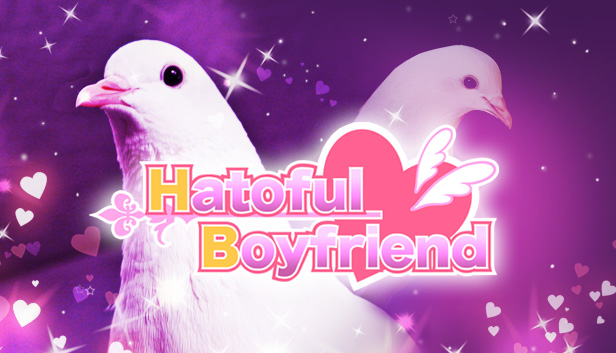
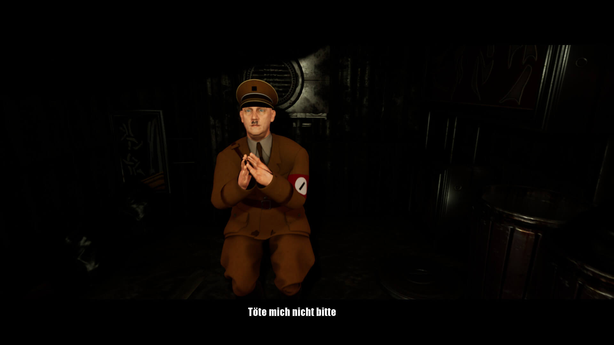
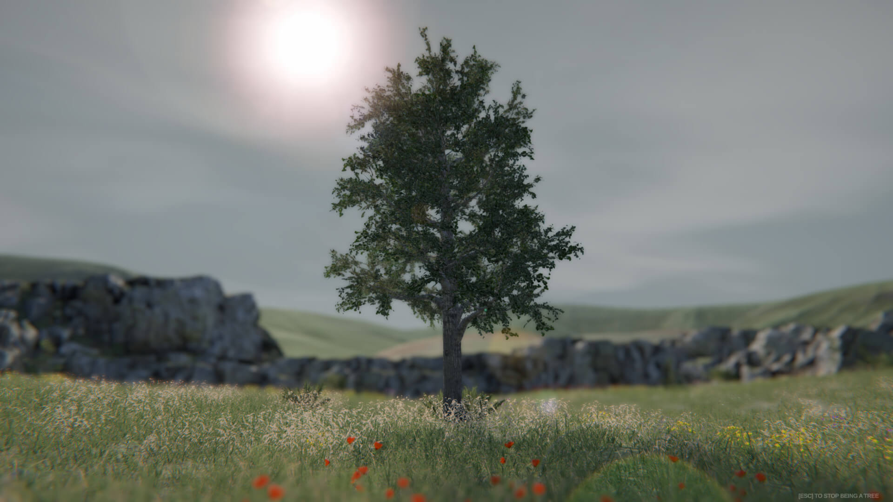
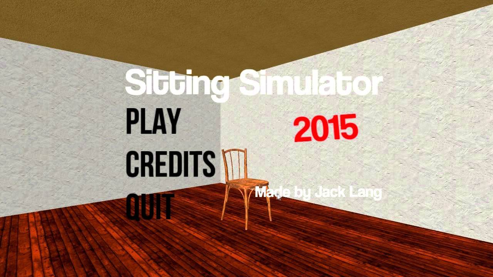

Los simuladores más extraños en el mundo de los videojuegos
En la industria de los videojuegos existen simuladores de todo tipo, simuladores de vida como "Los Sims", de deportes como el "Fifa", de carreras como las franquicias "Forza" y "Gran Turismo", pero también existen algunos más insólitos. Este es un recorrido por los 5 simuladores más extraños en los videojuegos.
-
Goat Simulator
Probablemente el simulador más conocido dentro de esta lista. Saltó a la fama en 2014 por su particular premisa, el jugador encarna una cabra cuyo objetivo es causar la mayor cantidad de destrozos posible e, incluso, golpeando humanos. También se pueden hacer acrobacias, andar en bicicleta subir a la rueda de la fortuna y lamer muchas cosas. El juego desarrollado por Coffee Stain Studios comenzó como una broma dentro de las oficinas de la empresa, pero acabó siendo un completo éxito en el mundo gamer.
-
Hatoful Boyfriend

Hatoful Boyfriend, también conocido como Pigeon Dating Simulator, es una novela visual japonesa en la cual el jugador toma control de una humana que fue recientemente aceptada en el prestigioso instituto St. PigeoNation, una escuela para talentosas aves y nuestro objetivo es encontrar al amor de nuestra vida en los pasillos del colegio. El juego tiene un sistema de toma de decisiones que definirán cuál de los múltiples finales verá el jugador al finalizar el mismo, lo que le da un alto valor de rejugabilidad para poder conocer todos los finales. El juego surgió en 2011 como una parodia a las clásicas novelas visuales otome, las cuales se dirigen principalmente hacia el público femenino.
-
Adolf Hitler Humiliation Simulator

Tal y como su nombre dice, el objetivo de este bizarro simulador es humillar al líder del Tercer Reich. Su principal método de humillación es orinar encima del Führer desde varios ángulos y posiciones e insultarlo mientras suplica perdón. El juego fue desarrollado por Gulag Games y es el único juego que tienen publicado en Steam.
-
Tree Simulator

En este simulador somos literalmente un árbol. Su objetivo es relajarse y desfrutar de ser un árbol mientras pasa el tiempo. Existen distintos tipos de árboles que el jugador puede elegir. Algo para destacar del juego es su excelente calidad gráfica y nivel de detalle. Un dato curioso es que el juego se renueva anualmente (no es broma) y ya registra 3 juegos en Steam, el Tree Simulator 2020, 2021 y 2022, este último contando con la adición del modo multijugador en el cuál el jugador podrá ser un árbol junto con otras 99 personas.
-
Sitting Simulator

Al igual que con el Tree Simulator, el Sitting Simulator cuenta con 2 versiones diferentes en Steam, la de 2014 y la de 2015. En este simulador el objetivo del jugador será sentarse, las opciones de asiento son: una silla común, un inodoro, una silla mecedora y una “silla dubstep”, la cual cuenta con un fondo con figuras extrañas, colores caóticos y música dubstep de fondo. El jugador puede mover la cámara para ver sus alrededores en todo momento.